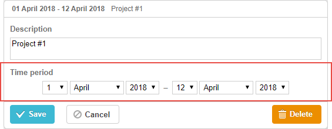

A pair of selectors for setting task duration by specifying the start and end dates of a task.

gantt.config.lightbox.sections=[
{name:"description", height:70, map_to:"text", type:"textarea", focus:true},
{name:"time", height:72, map_to:"auto", type:"time"} ];
To add the time control to the lightbox, follow the steps below:
1) Add a section to the lightbox configuration:
gantt.config.lightbox.sections=[
{name:"description", height:70, map_to:"text", type:"textarea",focus:true},
{name:"period", height:72, map_to:"auto", type:"time"}, ];
2) Set a label for the section:
gantt.locale.labels.section_period = "Time period";
The following properties are mostly important and commonly set for the 'time' control (see the full list here):
To configure the selectors of the "duration" or "time" section, use the time_format property (see Date Format Specification):
Adding the time selector to the 'Time period' section
gantt.config.lightbox.sections = [
{name:"description", height:38, map_to:"text", type:"textarea", focus:true},
{name:"period",type:"time", map_to:"auto", time_format:["%d","%m","%Y","%H:%i"]}];
Note, the allowable members of the time_format's array are:
You can change just the order and the number of these members in the array but not the data presentation format.
For example, you can change the format as in:
// time goes first
time_format:["%H:%i", "%m", "%d", "%Y"]
// month goes first
time_format:["%m","%d", "%Y", "%H:%i"]
// the year selector is removed
time_format:["%H:%i", "%m", "%d"]
// incorrect
time_format:["%H:%i", "%M", "%d", "%Y"] // "%m" was changed to "%M"
Generally, the time and duration controls are mapped to the mandatory 'start_date', 'end_date' data properties by setting the map_to property to the "auto" value (map_to:"auto").
To map controls to some custom date properties (instead of 'start_date', 'end_date'), use the object notation of the map_to property:
gantt.config.lightbox.sections = [
{name: "description", height: 72, type: "textarea", map_to:"text", focus: true},
{name: "time", height: 72, type: "duration", map_to:"auto"},
{name: "deadline", height: 72, type: "time", map_to:{start_date:"planned_start",end_date:"planned_end"}} ];
Related sample: Displaying deadlines
As an object, map_to has 3 properties:
If some property is not specified, the control takes the value of the related mandatory date property.